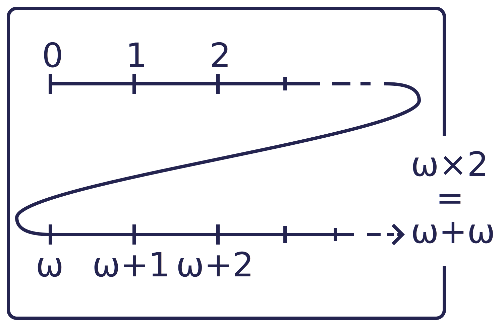

Extraordinary ordinals
Preamble & requirements
This short text is about ordinals. It may contain some maths, but don't worry, it won't hurt. Nonetheless, I think the following requirements should be fullfilled: you may want to know a little about what is a set, how we (usually) write them and what is a function. Additionnaly, if you know the difference between a set and a (proper) class, that's good.
Do not hesitate to pause-and-ponder if you ever feel the need. It is a rather complicated subject and, depending on your knowledge and your intuition, it may be hard.
Finally, before we start, I would like to thank Grant Sanderson, who gave me the impetus to start this project.
How to count?
Orders!
When counting, one gives an order to things. There is the first thing, the second thing, the third thing, ... and sometimes, when there is nothing at all, there is a total of zero things. As you notice, counting in intrinsically bound to the idea of order.
Not any orders, in fact! When dealing with finite sets, only those which are total orders allows to count. By this, we mean orders on a set such that every two elements $a$ and $b$ are in relation: either $a < b$, $a > b$ or $a = b$. This may seem like an unnecessary remark, but the study of partial orders is particularly interesting (but we won't deal with them here).
One order is good, but two is better! Consider the usual ones on $\{0,1,2\}$ and $\{3,4,5\}$? They look different, but are pretty similar: they both have elements, both have a first, second and third element and both doesn't have a fourth element. In fact, they are said to be isomorphic, i.e. up to a change of label, they are identical. I will often use the symbol $a \mapsto b$ to tell "let's rename $a$ into $b$".
Before moving on, let's ask ourselves what we like when we count. If we are to generalize counting, we need to get rid of a few properties and, most importantly, to keep some. When we count in the usual set $\mathbb{N}$ of the natural integer, we notice something: every subset $S$ of $\mathbb{N}$ has a least element (i.e. an element less than any other element in $S$). So, we may want to go with that: every order we'll consider will have this property, and we will call them well-orders.
An equivalent property to being well-ordered for an ordered set $S$ is that there is no strictly decreasing sequence of elements of $S$. Still using the $\mathbb{N}$ example, try and find a strictly decreasing sequence of integers. If you can't, that's normal, because such a thing does not exists.
We may now try to find a classification of these order, and for each class, a quintessential order. In fact, we'll do better: first, some fidgeting with well-orders and then a classification.
Numbers?
Let's look at a few particular well-ordered sets. The zeroth one is $A_0 := \emptyset = \{\}$, the first one $A_1 := \{\emptyset\}$, the second $A_2 := \{\emptyset, \{\emptyset\}\}$ and the $(n+1)$-th is the set containing all the previous ones, that is $A_{n+1} := \{A_1, A_2, \dots, A_n\} = A_n \cup \{A_n\}$. You first notice that if $n < m$, then $A_n \in A_m$.
Sidenote here: we often use the notation $a := b$ to say: "let's define $a$ by it being equal to $b$", where $b$ is often complex-looking. This differs from the usual $a = b$ being only a statement: "I state that $a$ and $b$ are equal".
Let's do the converse: let's define an order by saying that $x < y$ if and only if $x \in y$. This may seem overly complex (and complex it is), but bear with me and look at what we've just done. Starting with the empty set, we created a family of thing that behave just like the plain good old natural numbers. So, rather than calling this family $A_0$, $A_1$, $A_2$, $A_3$, ..., let's say that these are the natural numbers, the ones usually called $0$, $1$, $2$, $3$, ...

Here I come to warn you: from now on, things will get weirder and weirder. For instance, with this definition, a number is both an element and a set; $3$ is a set with three ordered elements, but also the greatest element of $4$.This may look like a weaknes or an overly-complex thing to do, but it will have its use.
So, why would we do that? Why would we call these things "numbers"? Because saying what a number precisely is is complicated (try it for yourself: how would you define a number?) and here, we just have a nice recipe! To be extra precise, we often call them "ordinal numbers", or simply "ordinals".
A closer look at the process we used to create our natural numbers shows that $n+1 := n \cup \{n\}$. That is, $n+1$ is the union of the set $n$ (so it contains every element that $n$ contains) and of the set containing only $n$. Imagine taking a big box an tossing in it the content of $n$ and then $n$ itself. That big box is now $n+1$.
To infinity!
We still want more! And here comes the deus ex machina, the axiom saving us: the collection of all natural numbers is a set. Let's call it $\omega$. Why does its existence matters ? Because now, we have a new well-order! One that did not previously existed, an infinite one!
Before we go further, we should notice that what I called $\omega$ may look like what is usually called $\mathbb{N}$. Why naming it differently? Because I swiped a few things under the rug, some weird technicalities, like that we cannot be sure that $\omega$ and $\mathbb{N}$ are exaclty the same object, that $\mathbb{N}$ do is a set and some other odd stuff. You shouldn't care too much about this, because a teacher once told us that "it is a matter of faith".
What does it looks like? It looks like a ladder, like all the finite numbers we just (re-)created, but an infinite one. It never stops an goes on and on and on forever! Nonetheless, it goes like that in only one direction, only upward; it is solidely rooted in the ground at the step $0$.

Addition
When adding $n$ and $m$, you count "one, two, ..., $n$, $n+1$, ..., $n+m$". In other words, you concatenated the order on $n$ with the one on $m$. Let's do the same with $V$ and $W$, two well-orders. For the sake of simplicity, we will assume that $V \cap W = \emptyset$.
How do we do it? We simply consider the set $V \cup W$, well-ordered as follows: if you compare two elements from $V$ or from $W$, you keep the old order and every element from $V$ is smaller than every element from $W$. We will call this new well-order $V+W$.
Let's try out with $\omega$. Put $V := \{z\}$ and $W := \omega$. Consider the set $(V + W) := \{z,0,1,2, \dots \}$, ordered with $z < 0 < 1 < 2 < \dots$. Well, if we do the following renaming : $z \mapsto 0$, $0 \mapsto 1$, $1 \mapsto 2$, $2 \mapsto 3$,... we have what I called sooner an isomorphism between $(\{z\}+\omega)$ and $\omega$. Because $V$ is isomorphic to $1$, we may have stumbled upon the fact that $1+ \omega = \omega$. Strange.
What if we do the opposite? Put $V := \omega$ and $m := \{z\}$? We find the set $(\omega + \{z\}) := \{0,1,2, \dots, z\}$. We have that $(\omega + 1)$ is something entirely new.
Multiplication
We need multiplication. Again, lets look at small exemple. Put $n := 2$, $m := 3$ and let's look at $n \times m$. The usual way of doing that is with rectangle, of height $n$ and width $m$. To represent it using sets, we'll do the cartesian product, or set multiplication, between $n$ and $m$; that is the set of all possible pairs. So we have $(n\times m) := \{(0;0), (1;0), (0;1), (1;1), (0;2), (1;2)\}$.
Again, we'll now need an order on this set! The convention is to give it the anti-lexicographic order. This barbaric piece of jargon means that in order to compare two pairs, you first compare the right-most coordinates of the two pairs and then, if they are equal, the coordinates to the left.
To be clear, with that mean of ordering in mind, we have $(10,2) > (20,1)$ because $2 > 1$ (and so here, we do not care about the order between $10$ and $20$). We also have $(10,3) < (20,3)$, because $3 = 3$ and then, $10 < 20$. Also, the name lexicographic means "like in a dictionnary", because you compare the first letters of two words and then the second ones, and so on.
In our previous example, we thus have the ordering $(0;0) < (1;0) < (0;1) < (1;1) < (0;2) < (1;2)$, which, by a clever renaming, can be seen as the order on $6 = \{0,1,2,3,4,5\}$. We've just seen that $2 \times 3 = 6$. Hurray! We could redo this example on $(3 \times 2) := \{(0;0), (1;0), (2;0), (0;1), (1;1), (2;1)\}$, but we wont.
Now, let's see what happens with $V := \omega$ and $W := 2$. We do have $(V \times W) = \{(0;0), (1;0), (2;0), \dots, (0;1), (1;1), (2;1), \dots , \}$. And about the order on that set ? Well, we have $(0;0) < (1;0)< (2;0) < \dots < (0;1) < (1;1) < (2;1) < \dots$. Here, you may start to wonder : "Have I ever seen that before?". Well, yes, because it looks like a sum, but no, because I skipped it. Try and add $\omega$ to itself: you fisrt have a copy of $\omega$, and then a second one. It looks like $\omega \times 2$ and $\omega + \omega$ are equivalent.

With the same argument, we find out what $\omega \times 3$ and, more generally, $\omega \times n$, for any $n$ finite, are: it is the concatenation of $n$ infinite ladders. Although it is fun, doing all of this purely by hand is tedious; it is time to power up.
Exponentiation!
No surprise here : first, let's see how it works on finite well-orders (aka natural numbers). Put $n := 2$, $m := 3$ and consider $n^m$. If your intuition whispers "$8$", you're correct. But how to see that ? Well, we consider the set of all triplets (also called $3$-uple) made out of elements of $2$. In other words, that is the set of elements of the form $(a;b;c)$ where $a$, $b$ and $c$ are elements of the set $2$. I could list it, but I won't.
To be extra clear, an element from $2^3$ can be seen as a function from the set $3$ to the set $2$: the element $(0;1;0)$ is the map $0 \mapsto 0$, $1 \mapsto 1$ and $2 \mapsto 0$. To keep the little sanity I still have, let's use notation $a[n]$ to represent the $n$-th element from the tuple $a$, that is to say what one would normally type $a(n)$ if we consider $a$ to be a full-on function.
Again, we're looking for ordinals, so we need an order on that $2^3$ thing. Let's choose the same as before: the anti-lexicographic ordering. So $(0;0;0)$ is the first element, $(1;0;0)$ the second one, then comes $(0;1;0)$, $(1;1;0)$, ... and finally, $(1;1;1)$.
Let's generalize! So, we take $V := \omega$, $W := 2$ and we consider the set of all functions $2 \to \omega$. And we give it the anti-lexicographic ordering. But what does it even mean? Well, you already know: here, such a function $f$ is wholly defined by its value on $0$ and on $1$; so it looks like the $2$-uple $(f[0];f[1])$. In fact, the set $\omega ^ 2$ is the set of all pairs of numbers.
Anti-lexicographic still means "first compare the right-most coordinates, and then the one to its left (and so on)", so you know how to deal with that. And now, we can count up to $\omega^3$ and even $\omega^n$, with $n$ any finite ordinal.
Let's try our new operation on $V := \omega$ and $W := \omega$. So we consider $\omega^\omega$ the set of $\omega$-tuple made out of elements of $\omega$, also called "integer sequences", which we'll see as functions $\omega \to \omega$. Although here comes a trap: we cannot use our magical anti-lexicographic ordering in order to have a well-order. Consider the sequence of sequences $u_0 := (1;1;1;1;\dots)$, $u_1 := (0;1;1;1;\dots)$, $u_2 := (0;0;1;1;\dots)$, ... It is a stricly decreasing sequence, the kind we forbid early on.
We need a way out. We'll find it by restricting our functions to those with finite support. Here, the support of a given sequence (aka function, aka $\omega$-tuple) $f : \omega \to \omega$ is the set of all elements $x$ such that $f[x] \neq 0$. More generally, we can always call $0$ the least element of any well-order (and it always exists) and apply the samee definition.
This way, elements like $u_0$ and the like are not taken into account and there is no strictly decraesing sequence. This proof is out of reach, so take it as granted.
The set of finitely-supported functions from $\omega$ to $\omega$ is often denoted $\omega^{(\omega)}$. More generally, the set of finitely-supported functions $W \to V$, with $V$ and $W$ being two well-orders, is denoted $V^{(W)}$.
You may want a drawing of $\omega^\omega$, but sadly, I don't know of any way to represent it. $\omega$ is a ladder, $\omega\times 2$ is two ladders, and so on, $\omega^2$ is a ladder upon which a ladder is attached to every step, $\omega^3$ is a ladder upon which a a copy of $\omega^2$ is attached to every step, and so on. So $\omega^\omega$ is huge. The one found on ordinal number's Wikipedia page is not as clear as it seems
Let's count!
Ordinals?
Now that we know how to handle well-orders, we want an application. Let's work on our fundamental mission: classifying them. Consider the following definition: an ordinal is a set $\alpha$ consisting only of ordinals and such that if $\beta \in \alpha$, then $\beta \subset \alpha$.
First, let's break it down. We want every ordinals to be a set consisting of ordinals. This means that if $0$, $1$ and $2$ are ordinals, then $\{0,1,2\}$ is a good candidate for being an ordinal, and it is, and we usually call it $3$, but I've already said that. Moreover, because $2 \in 3$, we need $2 \subset 3$. Is it true? Well, $2 = \{0,1\}$ and $3 = \{0,1,2\}$, so yes.
Let's look at $\omega$. Is it an ordinal? Every of its element are ordinals and for any integer $n \in \omega$, we have every smaller integer (the elements of $n$) in $\omega$. So $\omega$ is an ordinal, by our definition.
But how to work out the ordinality of $\omega \times 2$? And $\omega^2$? And even $\omega^\omega$? We can't do it by hand. So, let's do some theorem-proving. First, we will need our theorem: every well-order can be associated to an ordinal.
Before we prove it, we shall understand it: put $W$ a well-order. Consider the function $S$ associating every element $x \in S$ to the subset of $S$ consisting of all the element strictly smaller than $x$ (it is called the initial segment up to $x$). Imagine you got the set $\{a,b,c\}$, ordered by $a < b < c$. Then $S(a) = \emptyset$, $S(b) = \{a\}$ and $S(c) = \{a,b\}$.
You notice that all these sets can be well ordered and associated to ordinals, respectively $0$, $1$ and $2$. You also notice that every of these well-orders are smaller than the whole $W$. Also, $W$ can be associated to the ordinal $3$, aka $\{0,1,2\}$.
How do we generalize and prove our theorem? Rather than doing this for every ordinals, we ask ourselves: "what if it isn't true?". In that case, there is a smallest well-order such that it isn't true, call it $W$. We consider the function $i$ associating every element of $W$ with its initial segment. All these subsets are well-orders smaller than $W$.
By hypothesis, all well-orders smaller than $W$ are associated to an ordinal. So, all these subsets $S$ can be associated to an ordinal $o(S)$. This means that $o(i(x))$ is an ordinal, associated to an element $x$ of $W$.
But then, the set $\alpha$ of all these ordinals (as in: $\alpha := \{o(i(x)): x \in W\}$) is an ordinal, and it can be associated to $W$. That is absurd, because we jut assumed that $W$ does not correspond to any ordinal. This means that the premise was faulty: such a $W$ does not exist.
What we've just done is a proof ad absurdum: by assuming something to be true, we show an inconsistency, which means that what we've just assumed isn't correct.
Recursion!
In our last try to achieve great heights and things, we were stumbling upon $\omega^{\omega^\omega}$ and so on. But how high can we go? Is there a limit? The answer is no: there is no fixed point after which you can't add one
{kind=link}
{kind=link}